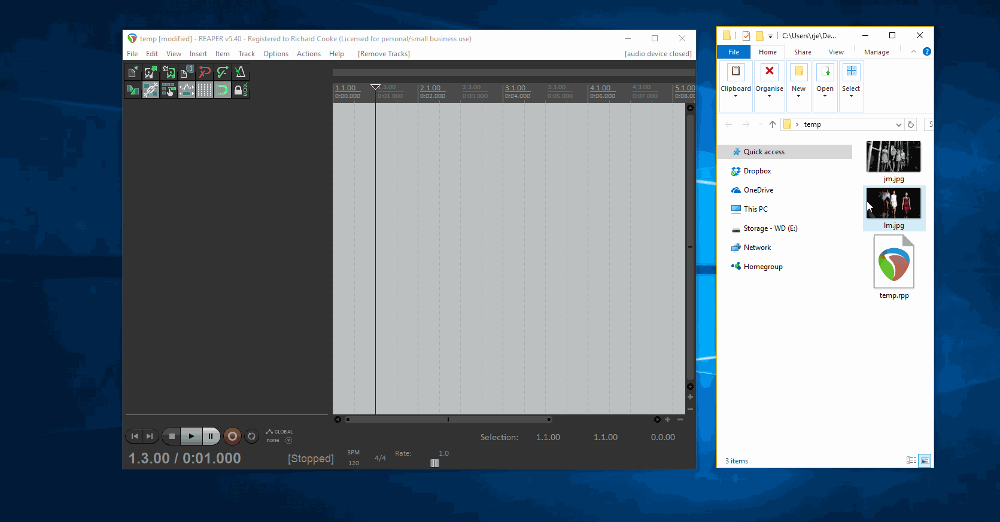
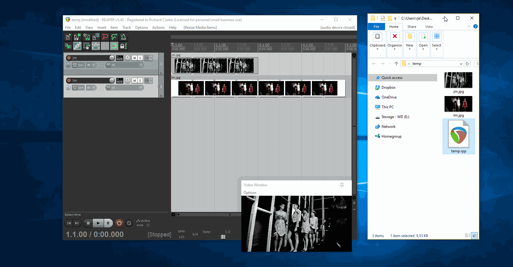
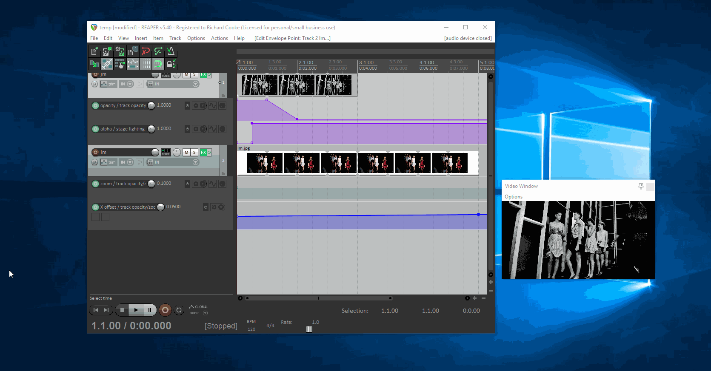

This short tutorial shows you how to edit photos or videos into a single video with transitions and effects using only Reaper's native functionality. It's a great way to use a few photos to make a music video or speak over a desktop recording to make a how-to video.



 Use the webm format as the others are huge. 25 fps. 1920x1080. A couple of minutes shouldn't be more than 100Mb.